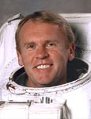

Lyndon B. Johnson Space Center
Houston, Texas 77058
|
National Aeronautics and Space Administration Lyndon B. Johnson Space Center Houston, Texas 77058 |
 |
Biographical Data |
||
Andrew S. W. Thomas (Ph.D.)
nasa Astronaut (FORMER)
PERSONAL DATA: Born December 18, 1951, in Adelaide, South Australia. Married to Astronaut Shannon Walker. He enjoys horse riding and jumping, mountain biking, running, wind surfing, and classical guitar playing. His father, Adrian C. Thomas, resides in Hackham, South Australia. His mother, Mary E. Thomas, resides in North Adelaide, South Australia.
EDUCATION: Received a Bachelor of Engineering Degree in Mechanical Engineering, with First Class Honors, from the University of Adelaide, South Australia, in 1973, and a Doctorate in Mechanical Engineering from the University of Adelaide, South Australia, in 1978.
ORGANIZATIONS: Honorary Fellow, The Institution of Engineers Australia.
EXPERIENCE: Dr. Thomas began his professional career as a research scientist with the Lockheed Aeronautical Systems Company, Marietta, Georgia, in 1977. At that time, he was responsible for experimental investigations into the control of fluid dynamic instabilities and aircraft drag. In 1980, he was appointed Principal Aerodynamic Scientist to the company and headed a research team examining various problems in advanced aerodynamics and aircraft flight test.
This was followed in 1983, by an appointment as the head of the Advanced Flight Sciences Department to lead a research department of engineers and scientists engaged in experimental and computational studies in fluid dynamics, aerodynamics and aeroacoustics. He was also manager of the research laboratory, the wind tunnels, and the test facilities used in these studies. In 1987, Dr. Thomas was named manager of Lockheed’s Flight Sciences Division and directed the technical efforts in vehicle aerodynamics, flight controls and propulsion systems that supported the company’s fleet of production aircraft.
In 1989, he moved to Pasadena, California, to join the Jet Propulsion Laboratory (JPL) and, shortly after, was appointed leader of the JPL program for microgravity materials processing in space. This NASA-sponsored research included scientific investigations, conducted in the laboratory and in low gravity on NASA’s KC-135 aircraft, as well as technology studies to support the development of the space flight hardware for future shuttle missions.
NASA EXPERIENCE: Dr. Thomas was selected by NASA in March 1992 and reported to the Johnson Space Center in August 1992. In August 1993, following one year of training, he was appointed a member of the astronaut corps and was qualified for assignment as a mission specialist on space shuttle flight crews.
While awaiting space flight assignment, Dr. Thomas supported shuttle launch and landing operations as an Astronaut Support Person (ASP) at the Kennedy Space Center. He also provided technical support to the Space Shuttle Main Engine project, the Solid Rocket Motor project and the External Tank project at the Marshall Space Flight Center. In June 1995, Dr. Thomas was named as payload commander for STS-77 and flew his first flight in space on Endeavour in May 1996. He next trained at the Gagarin Cosmonaut Training Center in Star City, Russia in preparation for a long-duration flight. In 1998, he served as Board Engineer 2 aboard the Russian Space Station Mir for 130 days. From August 2001 to November 2003, Dr. Thomas served as Deputy Chief of the Astronaut Office. Dr. Thomas completed his fourth space flight on STS-114 and has logged more than 177 days in space. He retired from NASA in February 2014.
SPACE FLIGHT EXPERIENCE: STS-77 was a 10-day mission during which the crew deployed two satellites, tested a large inflatable space structure on orbit and conducted a variety of scientific experiments in a Spacehab laboratory module carried in Endeavour’s payload bay. The flight was launched from the Kennedy Space Center on May 19, 1996 and completed 160 orbits 153 nautical miles above the Earth while traveling 4.1 million miles and logging 240 hours and 39 minutes in space.
On January 22, 1998, Dr. Thomas launched aboard space shuttle Endeavour as part of the STS-89 crew to dock with the Mir space station. He served aboard Mir as flight engineer 2 and returned to earth with the crew of STS-91 aboard space shuttle Discovery on June 12, 1998, completing 141 days in space and 2,250 orbits of the earth.
STS-102 Discovery (March 8 to March 21, 2001) was the eighth shuttle mission to visit the International Space Station and Dr. Thomas’s third flight. Mission accomplishments included the delivery of the Expedition-2 crew and logistics resupply with the Leonardo Multi-Purpose Logistics Module, and the return to earth of the Expedition-1 crew. During the mission, Dr. Thomas performed a 6.5-hour spacewalk to install components to the outside of the space station. Mission duration was 307 hours and 49 minutes.
STS-114 Discovery (July 26-August 9, 2005) was the Return to Flight mission following the Columbia accident during which the crew continued the assembly of the International Space Station. Dr. Thomas tested and evaluated new procedures for flight safety and inspection and repair techniques for the shuttle’s thermal protection system. After a 2-week, 5.8 million mile journey in space, the Orbiter Discovery and its crew returned to land at Edwards Air Force Base, California. Mission duration was 333 hours, 32 minutes, 48 seconds.
MARCH 2014